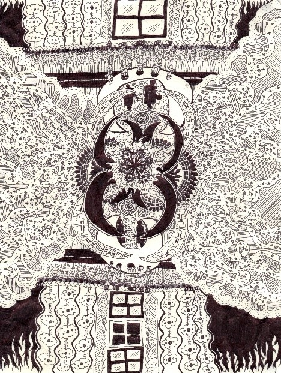

Figure 1: Nathan Imperial (2022) student-id-photo.jpg [photograph], photo taken at home.
My hobbies include writing novels, fantasy worldbuilding (for my books!), bouldering (sometimes) drawing, making moodboards, participating in my favourite fandoms (such as making fanart, reading and writing fanfiction and coming up with theories), reading books and baking.
Figure 2: “Dream” drawing

In addition, my favourite fandoms include Harry Potter, Game of Thrones, Hannibal, The Poppy War, Ava’s Demon, Necropolis, the MCU, The Witcher, Oxenfree, Adventure Time, Inside Job, Star Wars, Merlin (the BBC show), Sherlock Holmes, Avatar: The Last Airbender (and Avatar: Legend of Korra, as well as the fan made comic Legend of Genji), Dragon Age, DC comics, and the Grishaverse.
Also, I used to be into video games, and I started off with Final Fantasy 13 part 2, and I used to play some XBOX and DS Nintendo games, but I got caught up with my other hobbies and I stopped playing games for a while. I intend to playing again in the future, though to be honest I am still very much a newbie when it comes to video games.
My favourite genre is fantasy, because I love how wild and imaginative creators can go with their worldbuilding, and it’s so fascinating to watch/read all of these human conflicts on such a fantastically epic scale. I’m also always on the hunt for new tv shows or movies to add to my watchlist, as well as books to add to my TBR pile.
The fandom things that I’m looking forward to in the future include watching the House of the Dragon, because unlike ASOIAF, it’s actually finished, so it sounds very interesting; watching the Sandman, because following the awaken god of dreams as a protagonist sounds like such a fascinating concept; finally watching the Harley Quinn HBO animated show; the Six of Crows TV show spinoff; the School for Good and Evil Netflix movies, and the Lockwood and Co. Netflix show, since those books were my childhood.
The other goals/things that I’m looking forward to includes completing this degree, and the Master of business information systems degree (with a specialisation in library science); getting a job as a university librarian; finishing writing my books and potentially publishing them; and last, and most importantly, the COVID pandemic being over!
I am interested in IT as a pathway into the career of a university librarian, since this job involves a lot of data management, and more technology is being increasingly incorporated into libraries (such as the digitisation of older materials, audiobooks and ebooks).
I am also interested in IT because more technology is integrated into society as time passes, and thus, it is a career field that provides a lot of other financially stable jobs because there is a high demand for people with IT skills. So, to prepare for the outcome that I am unable to find an open position as a university librarian, I could also complete the Master of Business information systems degree only with a library science specialisation, but also a computer science specialisation, as it is a degree that is accredited with the Australian Computer Society. I am also considering becoming a data engineer if there are no positions available as a librarian because data management sounds interesting.
My interest in the Bachelor of Information Technology degree at RMIT began when I was researching pathways to becoming a librarian and found out that the Master of Business information systems (library specialisation) is one of the accredited ALIA (Australian Library and Information Association). I also enjoyed my enrolment in an IT class in Year 8 and 9 of high school, where we used Scratch to make simple computer games for our assignment.
I chose to RMIT because I wanted to complete a Bachelor of Information Technology degree and start midyear, and the midyear applications for the Bachelor of IT at Monash had already closed. In addition, my dad also completed his IT degree at RMIT, and he recommended this university to me.
I expect to learn data management (relating to bibliometrics) and digitisation, how to write programs, IT problem solving skills, and how IT computer systems work.